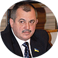

Мета тимчасової спеціальної комісії з перевірки суддів
-
Відновлення законності і справедливості
-
Підвищення авторитету судової влади України
-
Довіра громадян до судової гілки влади
Тимчасова спеціальна комісія формується та здійснює свою діяльність на підставі Закону України від 8 квітня 2014 року № 1188-VII «Про відновлення довіри до судової влади в Україні» та Регламенту, який затверджується на першому засіданні.
Тимчасова спеціальна комісія діятиме протягом року до 8 квітня 2015 року у складі 15 осіб. Суб’єктами її формування є Пленум Верховного Суду України, Урядовий уповноважений з питань антикорупційної політики та Верховна Рада України.
-
Члени Тимчасової спеціальної комісії
-

Мойсик Володимир Романович
Голова Тимчасової спеціальної комісії
-
Кармазін Юрій Маркович
Член Тимчасової спеціальної комісії
-
Лавренюк Микола Юхимович
Член Тимчасової спеціальної комісії
-
Мачужак Ярослава Василівна
Член Тимчасової спеціальної комісії
-
Щотка Станіслав Олексійович
Член Тимчасової спеціальної комісії
-
Галабала Маркіян Васильович
Заступник Голови Тимчасової спеціальної комісії
-
Соловйова Марина Михайлівна
Секретар Тимчасової спеціальної комісії
-
Варишко Петро Васильович
Член Тимчасової спеціальної комісії
-
Смирнова Катерина Іванівна
Член Тимчасової спеціальної комісії
-
Важливі пункти із регламенту Тимчасової спецальної комісії при прийомі заявок
-
1.
Комісія може повернути заяву заявникові якщо до неї не додано копій судових рішень або якщо вона не відповідає вимогам, встановленим Законом. Заявник не позбавляється права повторно звернутись із такою заявою після виправлення зазначених недоліків.
-
2.
Заяви, що надійшли після закінчення визначеного цією статтею строку,
а також заяви, щодо яких Комісія не встигла прийняти рішення до закінчення своїх
повноважень, передаються до Вищої ради юстиції для продовження їх розгляду за
загальною процедурою.
-
3.
Повторні заяви долучаються до первинних і розглядаються разом із ними,
про що повідомляється скаржникові.
Повторними є заяви:
-
а) тотожні за змістом;
-
б) від різних суб’єктів, у яких зазначено одні й ті самі обставини (факти) щодо одного й того самого судді (суддів) в одній і тій самій судовій справі і які є ідентичними за змістом вимог;
-
в) від одного й того самого скаржника із уточненням обставин і додатковими матеріалами стосовно одного й того самого судді (суддів) за фактами, викладеними у первинній заяві;
-
г) на дії кожного судді з колегії суддів, яка розглядала судову справу.
Якщо за первинною заявою Комісією прийнято остаточне рішення, повторна заява долучається до первинної без розгляду, про що повідомляється заявникові. У разі наявності у повторній заяві нових фактів, за якими не проводилася перевірка і які не були предметом розгляду Комісії, така заява реєструється як первинна.
Завантажити повний текст регламенту
-
Як комісія приймає рішення
-
1.
Висновок Комісії про порушення суддею (суддями) присяги, який разом із матеріалами перевірки направляється до Вищої ради юстиції для розгляду та прийняття нею рішення у строк не більше трьох місяців з дня надходження висновку у порядку, визначеному Законом. Порушення даного строку Вищою радою юстиції не є підставою для припинення процедури перевірки судді. Суддя має право на оскарження рішення Вищої ради юстиції в порядку, визначеному Кодексом адміністративного судочинства Висновок Комісії про порушення суддею присяги є обов’язковим для розгляду Вищою радою юстиції;
-
2.
У разі якщо Комісією за результатами перевірки не встановлено фактів, що свідчать про порушення суддею присяги судді, а виявлено підстави для притягнення судді до дисциплінарної відповідальності, матеріали перевірки щодо суддів вищих спеціалізованих судів та суддів Верховного Суду України направляються до Вищої ради юстиції, а щодо суддів місцевих та апеляційних судів – до Вищої кваліфікаційної комісії суддів України;
-
3.
Матеріали Комісії щодо перевірки суддів, що свідчать про наявність у діях судді ознак кримінального правопорушення, направляються Комісією до Генеральної прокуратури України для проведення перевірки дій судді на предмет наявності в його діях ознак кримінального правопорушення;
-
4.
Якщо за результатами перевірки судді не встановлено обставин, що свідчать про порушення ним присяги судді, наявність підстав для притягнення його до дисциплінарної або кримінальної відповідальності, Комісія більшістю голосів ухвалює висновок про це і приймає рішення про припинення перевірки щодо такого судді. Матеріали перевірки разом із висновком і рішенням Комісії щодо суддів вищих спеціалізованих судів та суддів Верховного Суду України направляються до Вищої ради юстиції, а щодо суддів місцевих та апеляційних судів – до Вищої кваліфікаційної комісії суддів України.
Завантажити повний текст регламенту
Медіаметаріали
Оформити заяву з помічником онлайн
Бланк заяви для самостійного заповнення
Тимчасова спеціальна комісія розглядає справи лише по визначених пунктах у справах які відносяться до подій Майдану від 21 листопада 2014 року